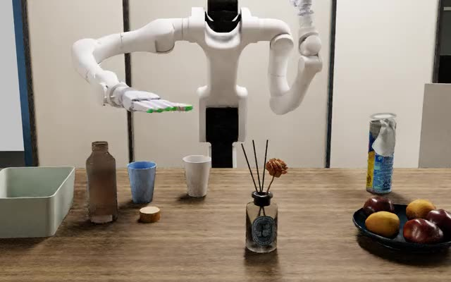
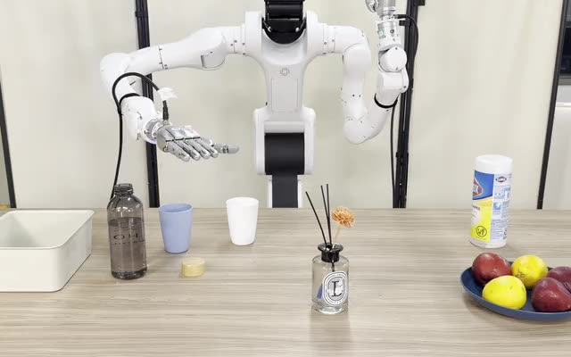
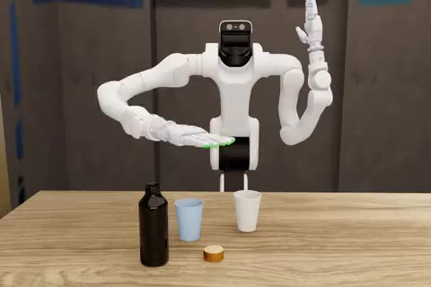
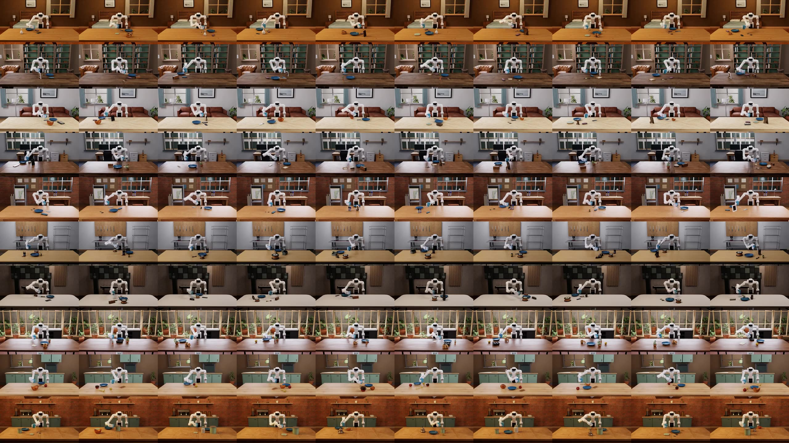
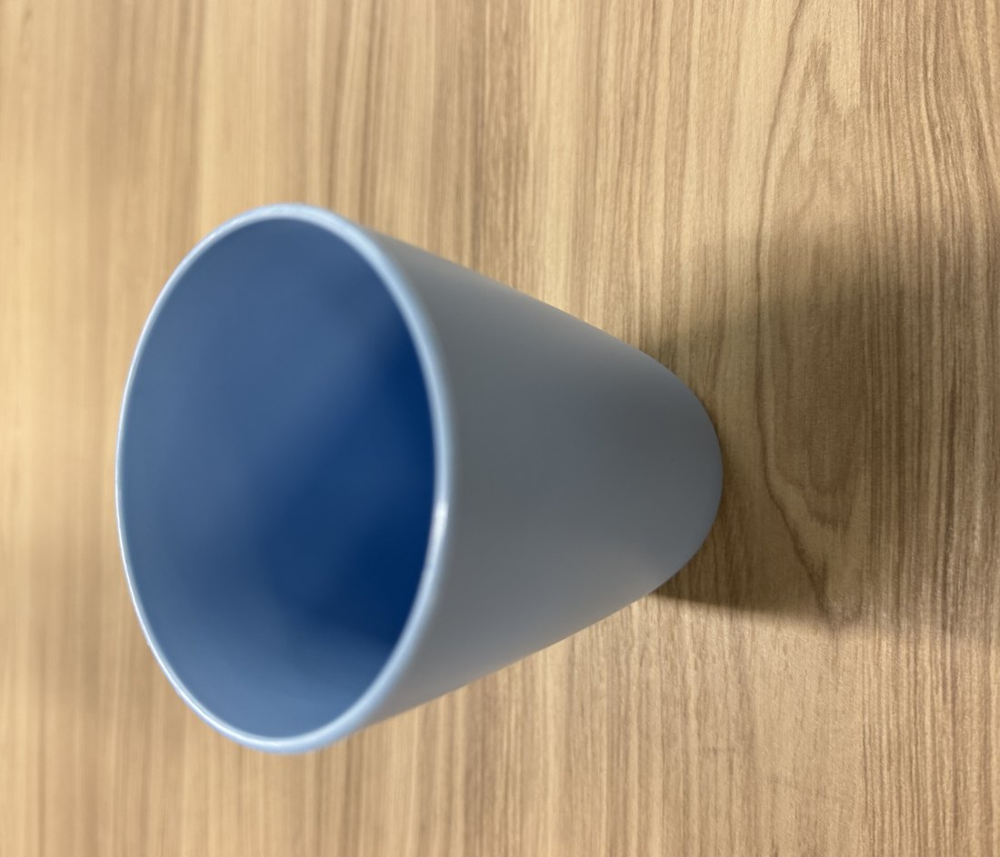
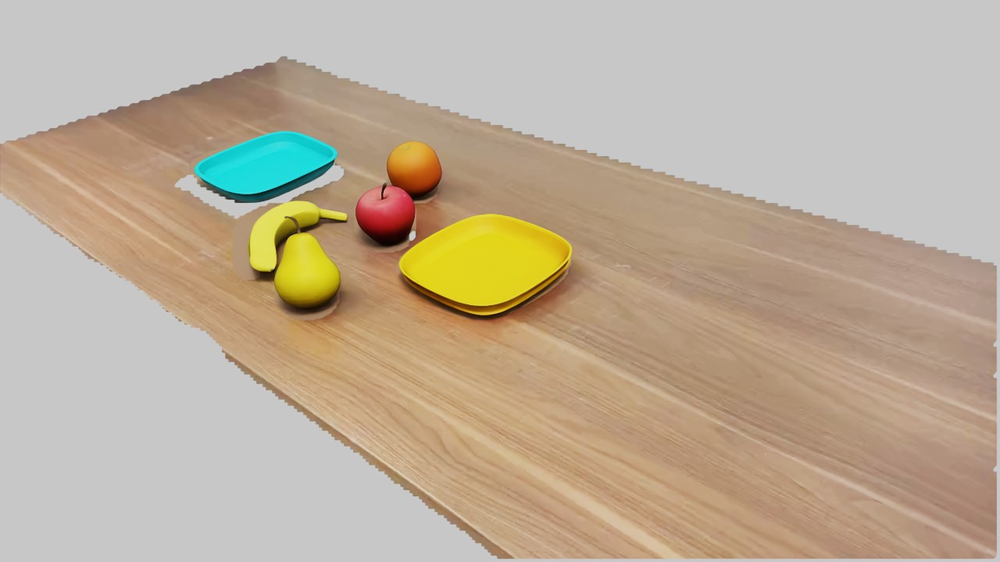
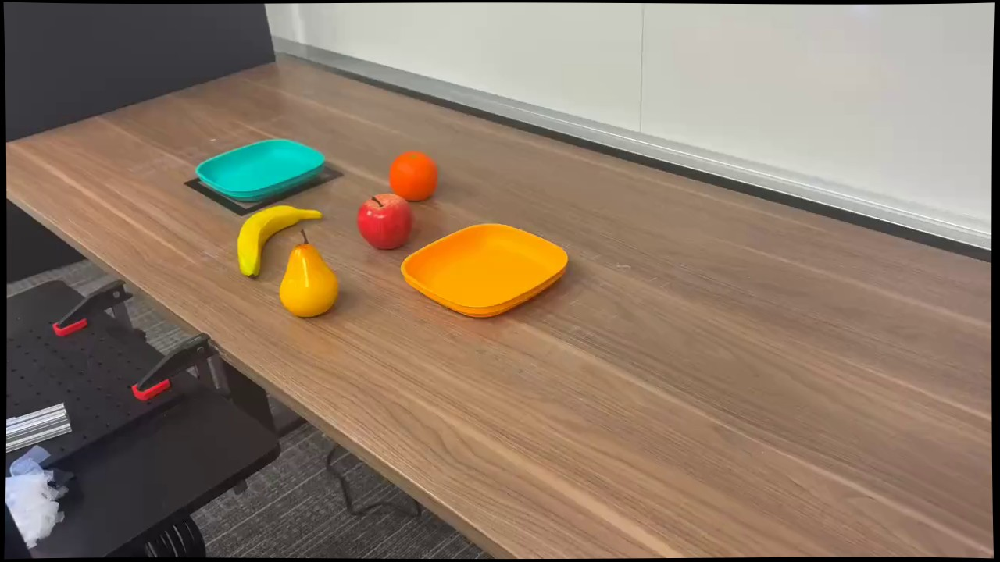

Scaling Self-Improving Agentic Real2Sim2Real for Robot Manipulation
From RGB images or videos, the agent reconstructs a digital twin.
The agent reconstructs manipulable objects as editable 3D assets.
Every object is simulated. Drag one.
Real capture on the left, digital twin on the right.
An agentic framework connects world construction and policy development in an end-to-end Real2Sim2Real pipeline. It iteratively constructs and refines faithful digital twins and diverse, physically executable digital cousins, enabling scalable data generation and policy learning in simulation. The resulting policies are then deployed on real robots.

1. World buildingConstruct faithful digital twins and expand them into diverse, physically executable digital cousins.
2. Policy developmentCoordinate data generation, policy learning, and refinement based on task requirements and simulation rollout feedback.
3. Self-improvementValidated procedures are distilled into reusable skills that guide subsequent tasks.
4. ScalingPerformance improves with greater world diversity, and with more interaction data.Scaling robot manipulation learning remains challenging due to the high cost of collecting real-world interaction data. Real-to-Sim-to-Real (Real2Sim2Real) offers a promising route by enabling policy learning in simulation grounded in real-world observations, yet scaling this paradigm across diverse tasks and physical interactions remains difficult. We introduce Real2Worlds2Real, a self-improving agentic framework that integrates scalable simulation-world construction with policy development. Given limited visual observations and task descriptions, its tool-orchestration harness enables an agent to construct faithful digital twins and expand them into diverse, physically executable digital cousins. The agent adaptively selects tools and revisits construction decisions, using visual and execution feedback to refine geometry and physical behavior. Building on these worlds, the agent orchestrates policy development by adaptively coordinating data generation, policy learning, and refinement based on task requirements and simulation rollout feedback. Across both processes, validated procedures are distilled into reusable skills, enabling accumulated experience to guide subsequent tasks. Experiments demonstrate improved world fidelity and successful real-world policy transfer, with performance gains from increasing world diversity and interaction-data volume. Skill reuse further improves world-building efficiency and long-horizon task success.
Given RGB images or videos and a language description of a manipulation task, the agent uses a skill-guided tool-orchestration harness to adaptively construct and refine simulation worlds. It compares rendered views with real-world observations to identify visual discrepancies, while simulated interactions reveal failures in physical behavior.



Fruits scene, each variant rendered at the reference camera. Scores: Table 2, over real captures from Fruits, HOPE-Video, and ARKitScenes.
Task objects as exported by each method, drawn with one neutral material. All Real2Sim methods use the same input videos; success rates are real-robot results over 30 trials (Table 1a).
World quality on real scenes (Table 2). Higher is better in every column.
Rather than following a fixed policy training pipeline, the agent adaptively orchestrates policy development based on task requirements and the demonstrations or policies already available. Throughout this process, feedback from simulated rollouts guides policy refinement.
Real-robot executions, and the same tasks in the reconstructed worlds. Success rates over 30 real-robot trials (Table 1).
Across both processes, the agent distills validated procedures into reusable skills, allowing accumulated experience to guide subsequent world construction and policy development.
Held-out task. Each library extends the previous one with fruit-handling experience, a geometric-cutting skill, and a full interactive-cutting skill.
The agent reconstructs digital twins, expands them into families of digital cousins, and iteratively validates and refines them through rendering and simulation feedback. Performance improves with greater world diversity, and with more interaction data.
Success on 100 unseen scenes, demonstrations fixed.
Success rates initially improve, then plateau; DAgger refinement adds gains beyond the plateau.
@misc{real2worlds2real,
title = {Real2Worlds2Real: Scaling Self-Improving Agentic Real2Sim2Real for Robot Manipulation},
author = {Jinzhong Gu, Jiakai Chen, Xinyi Cao, Yan Shen, Hangke Sui, Shutian Zheng, Xiang Xiao, Lu Shi, Haoran Lu, Fan Xu, Daochen Shi, Ruihua Zhang, Wei Zhan, Masayoshi Tomizuka, Ruihai Wu},
year = {2026}
}